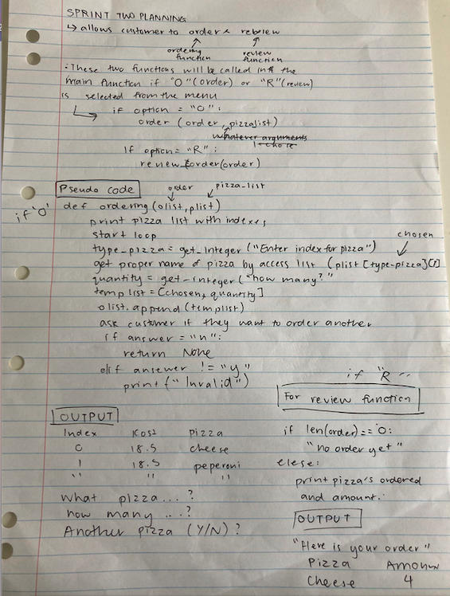
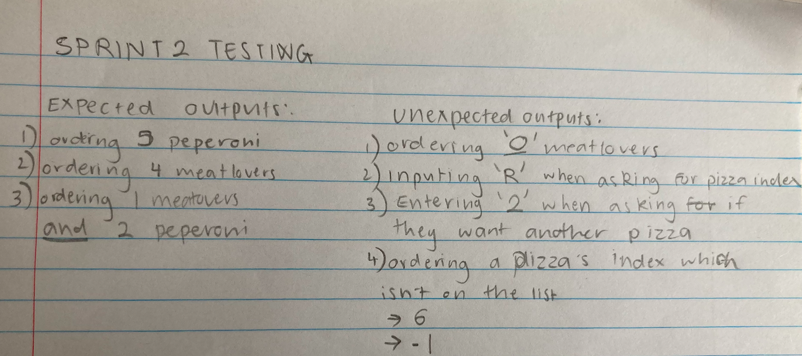
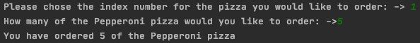

Aim:
To make a program to allow the user to order a pizzza and review their order (adding more options to the menu).
Therefore I would have to create more options in the menu and then make a ordering function and a review option (to see the status of their order with a list of the pizzas they have ordered the quantity corralated to each pizza). The sprint is dedicated to making sure that the brief is meet in the most basic terms of being a program where a customer can order a pizza. This was the top priority as the first step is always to bulid a small amount of fuctions that are neccessary to the fundamental features of the programme e.g. review and reviewing order.
Final Output: (screenshot)

Planning

Evidence of my standup

Sprint Board

Testing Plan:
Reflection:
Problems I fixed while working on sprint 2:
The confirmation message printed out differently than expected. I recognised this to be due to the wrong numbers being inputed into the last square brackets into the statement 'olist[type_pizza][1]'. As if I had the wrong number in the last square bracket it will return with a string/integer from the wrong column (as shown below). To fix it I changed the 0 to a 1. I got this wrong because I forgot that you count the list terms starting from 0 and not 1. This was a good mistake to learn from as it will help me for future sprints.
Before:

After:
Problems I Encountered:
The first problem I encountered was that the indexes start at 0 (which is standard in the digital tech world) but it is confusing for the general public. I hope in one of my later sprint's I can fix this. However, as this is not a major problem since it's not cause an program crashes, i don't need to priotise fixing it at the moment.

If the user enters a quantity of 0 for a pizza, it programme allows this even when they aren't ordering anything. This indicates that the boundraies on the quantity_pizza's get_integer are no existant. This is a huge issue at the moment because at the moment a customer will be able to order 0, or negative pizza's which isn't helpful to the pizza shop. Customer's could also order a huge amount, for example, 1000 pizza's - which is utterly unrealistic and impossible. This issue I'm going to prioritise for the next sprint. I was originally planning to work on calculating total cost of the order for the customer, after testing sprint 2 and finding this urgent problem I've decided that my time would be better spent validating when a integer input is required.

When the user accidently enters a string instead of a integer, the programme crashes and no error message appear. If the problem crashes, it's a HUGE problem as it's unfair to the customer when it was probably a mistake. This is another reason why the input of integer's should also be validated - to make sure crashes don't occur when trying to input a integer. This problem I found makes it clear that the program is very fragile and that any unexpected inputs are likely to cause a crash.

This clearly shows a problem with the 'get_string' function as it allowed for a integer to be entered when only y or n should've been entered. This alerted me that validating string entrys is a very important part of this program and it needed to be deal with quickly (in the next sprint or the one after that). When asked if they would like to order another pizza, if the user enters enters in a wrong input (not 'y' or 'n'), although the program says "invalid entry", the program will automatically asks the user for a pizza index. This is a problem because if the user meant to enter 'n' then they will be forced to order more pizza's without an exit. Instead after the 'invalid entry' message coming up, the question should've been repeated again to allow the user another chance to press the right key. After some more indept testing around this point in the program it seems as if the only way to go back to the main menu is pressing 'n', and that any other value entered will lead them to ordering a new pizza. This is a problem with the string validation.

When the user enters in a pizza index that isn't valid (smaller or larger than the lenth of the pizza list), the program doesn't return a error message and instead the program crashes. Therefore, if a index that didn't exist (higher than 5) was returned, the the program would crash. This is a huge problem with 'get_integer' as it should let the customer know that there was a mistake and allow them a chance to reenter. This problem is big as it causes a system crash and there's a high possibility of this occur. This is why this is one of my top prioties to validate integer inputs properly.

Final Reflection:
From this testing process I learned how important inputs from the user are to consider. Because usually when planning and buliding my code I'm only thinking of expected inputs, however this made me realise how likely unexpected inputs from the user are. In the future I want to consider all unexpected inputs while doing my planning and code writing. Unexpected inputs could be from the user not understanding completely what to put in, unclear questions in the code output, or from their fingers slipping on the keyboard.
After testing sprint 2 thoroughly, I can see that inputs for integers and strings are in dire need to be validated to make sure the system doesn't crash and give error messages accordingly. This has made my plan for the next sprints to solely focus on the integer and string valiations as they are the highest prioity at the moment. I decided this because calculating a total cost for the customer isn't as important when there's a chance that the program could crash way before they have a chance to finish their order. To stop errors (like the ones I encountered when the customer is able to enter 0 or negative pizza's) which sprout from undetermined boundaries, I will makes sure the valiation function will provide good limits and boundaries to the user's inputs.
I am overall proud of what was accomplished in this sprint, espeically while utilising the loop funciton to make ordering the pizza a smooth experience.
I would prefer the program to have cost's calculated and to have a nicely ordered indexes for the pizza menu, however, I can recognise that these aren't my priorities at the moment.